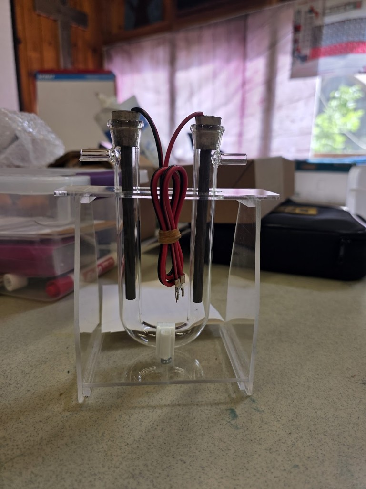

Instructors: conductivity ladder, U-tube fill level, why the ratio runs high, balloon timing — instructor.md.
Session arc
- Part A — Conductivity ladder: distilled → tap → electrolyte (why nothing happens without ions)
- Part B — Measure current; use Faraday's law to predict a gas volume
- Part C — Collect the gases in the U-tube; check the 2:1 ratio and your prediction
- Part D — Identify both gases: splint tests, then the H₂ balloon pop
- Part E — Start the overnight rust-removal cells for Session 5
Before anything else: start the balloon generator
The balloon demo in Part D is the only part of this session that cannot be rushed, because the gas has to be made, one electron at a time. Faraday sets the pace and there is no way around it:
| Current | H₂ produced | Time to fill 100 mL | 250 mL | 500 mL |
|---|---|---|---|---|
| 0.5 A | 3.8 mL/min | 26 min | 66 min | 132 min |
| 1.0 A | 7.6 mL/min | 13 min | 33 min | 66 min |
| 2.0 A | 15.2 mL/min | 7 min | 16 min | 33 min |
| 3.0 A | 22.8 mL/min | 4 min | 11 min | 22 min |
A party balloon inflated to a modest 10 cm across holds about 500 mL. Read across that row and it is obvious: switch the generator on before the students arrive and let it run through Parts A–C. See Part D for the build.
Electrolyte — sodium sulfate (Na₂SO₄)
Never use table salt (NaCl). Chloride is oxidized at the anode in preference to water and produces chlorine gas.
Recipe — ~0.1 M Na₂SO₄
| Batch | Anhydrous Na₂SO₄ | Decahydrate (Glauber's salt) | Water |
|---|---|---|---|
| 250 mL | 3.6 g | 8.1 g | Fill to 250 mL |
| 500 mL | 7.1 g | 16.1 g | Fill to 500 mL |
| 1.0 L | 14.2 g | 32.2 g | Fill to 1.0 L |
Check which one you bought — the decahydrate is more than half water by mass, and weighing it as if it were anhydrous gives you a bath at less than half the intended strength.
Stir until fully dissolved. Label "0.1 M Na₂SO₄ electrolyte — NO SALT".
Water: tap is fine. Distilled is needed only for the first rung of the Part A ladder.
Backup if Na₂SO₄ is unavailable: baking soda, 1–2 tsp per 500 mL. It works, but it fizzes CO₂ at the anode and muddies the Part C ratio, so it is a fallback and not an equal substitute.
Part A — The conductivity ladder (26–36 min)
Figure 1 — H₂ at the cathode (−), O₂ at the anode (+). With no ions in solution, almost no current flows and almost nothing happens.
The point of this part
Last session students used electricity as a measuring stick. Today they first have to earn the current. Three liquids, one fixed voltage, one meter — the only thing that changes is what is dissolved in the water.
Materials (beaker cell)
- Beaker or clear cup (~200–400 mL) — ideally three, one per rung
- Two graphite rods
- DC supply set to a fixed voltage (5 V is a good choice) — do not change it between rungs
- Multimeter on DC mA, wired in series
- Distilled water, tap water, and Na₂SO₄
- Goggles
Procedure
- Set the supply to your chosen voltage and write it on the board. It does not change for the rest of Part A.
- Clamp the two graphite rods 2–3 cm apart, immersed to the same depth every time. Spacing and depth are part of the experiment — changing them invalidates the comparison.
- Rung 1 — distilled water. Power on for 2 minutes. Record current. Look hard for bubbles.
- Rung 2 — tap water. Same electrodes, same spacing, same voltage. Record current.
- Rung 3 — add Na₂SO₄ to the tap water to make roughly 0.1 M (3.6 g per 250 mL), stir until dissolved, and record current again.
Data — the ladder
| Rung | Liquid | Applied V | Current I (mA) | Bubbles? |
|---|---|---|---|---|
| 1 | Distilled water | |||
| 2 | Tap water | |||
| 3 | Tap water + 0.1 M Na₂SO₄ |
Current in rung 3 ÷ current in rung 1 = ______
What to expect
Distilled water gives a current so small that many meters read zero — pure water contains only about one ion pair in every 550 million molecules. Tap water usually gives something small but real, a few mA, because it carries dissolved minerals; this rung is worth doing precisely because it is not zero. The electrolyte rung is typically hundreds of times larger than rung 1.
Say out loud: the water did not change between rung 2 and rung 3. The same H₂O molecules are being split. All that changed is that charge now has a way to cross the gap.
Talking point: Water is the reactant. The electrolyte is the road. Without a road, the reactant never gets to the electrode.
Part B — Measure the current, predict the gas (36–50 min)
This part produces a number that Part C will test. Do not skip ahead to the U-tube.
Procedure
- Keep the rung-3 beaker running at your fixed voltage with the ammeter in series.
- Let the current settle (10–30 s) and record it. If it drifts, record a high and a low and use the average.
- Watch both electrodes. One side bubbles visibly faster. Record which — this is a prediction you will check in Part C.
- Optional, if the supply is adjustable: wind the voltage down until bubbling just stops, and record that threshold.
Data — with Na₂SO₄
| Quantity | Value |
|---|---|
| Applied voltage V (V) | |
| Current I (mA) → in amperes, I = ______ A | |
| Which electrode bubbles faster, (+) or (−)? | |
| Voltage at which bubbling just disappears (optional) |
The two voltages worth naming
- 1.23 V is the thermodynamic floor: below it, splitting water is uphill no matter how patient you are.
- Real cells need more — typically 1.6–2.0 V before anything is visible, and several volts to run briskly. The excess pays for overpotential (the electrode surface is slow at making gas) and for the resistance of the solution.
- Students record the applied V they actually used, not the textbook number.
If you hunted for the bubbling threshold above, that measured onset is the 1.23 V floor plus overpotential — you have measured a real irreversibility, not an error.
Rate from current (Faraday, again)
Same law as Session 3, new products. Hydrogen needs 2 e⁻ per molecule, oxygen needs 4:
ṅ(H₂) = I / (2F) ṅ(O₂) = I / (4F) F = 96,485 C/mol e⁻
So for the same current, H₂ comes off at exactly twice the mole rate of O₂ — the 2:1 ratio is already there in the electron bookkeeping, before you collect a single bubble.
Converting to a volume at room conditions (25 °C, 1 atm), where 1 mol of any gas occupies 24.45 L:
V̇(H₂) in mL/min = [ I / (2F) ] × 24,450 × 60 ≈ 7.6 × I (I in amperes)
Rule of thumb to put on the board: one amp makes about 7.5 mL of hydrogen per minute.
Prediction sheet — fill in before you touch the U-tube
| Step | Expression | Your value |
|---|---|---|
| Measured current I | ______ A | |
| ṅ(H₂) = I/(2F) | ______ mol/s | |
| ṅ(O₂) = I/(4F) | ______ mol/s | |
| H₂ volume rate ≈ 7.6 × I | ______ mL/min | |
| Predicted H₂ after 10 min | ______ mL | |
| Predicted O₂ after 10 min | ______ mL |
Check before moving on: your two mole rates must differ by exactly a factor of 2. If they do not, you divided by the wrong number of electrons.
Unit trap: the meter says mA. 300 mA is 0.300 A. Getting this wrong makes you wrong by a factor of a thousand, and a thousandfold error looks perfectly reasonable on a calculator screen.
Part C — Collect the gases and test the prediction (50–72 min)

Figure 2 — The U-tube. Each limb is closed at the top by a stopper carrying a graphite rod. Each limb has an open side arm near the top. Gas gathers in the sealed dome under each stopper and pushes the liquid level down.
How this apparatus actually works — read before filling
This is the step that most often fails, and it fails for one reason: the fill level.
Gas is trapped in the closed space between the stopper and the liquid surface. As gas accumulates, the liquid in that limb is pushed down, and the displaced liquid rises up the open side arm. That side arm is the vent — it is what lets the liquid move. It must stay open.
The consequence is the rule that decides whether Part C works:
Fill until the liquid stands part-way up both side arms. If you fill only to below the side-arm junction, the gas escapes straight out of the side arm and you will collect nothing while apparently doing everything right.
And the matching stop condition:
Stop the run before the falling liquid level in the H₂ limb reaches the side-arm junction. Past that point, hydrogen vents and your ratio silently collapses toward 1.
The H₂ limb fills twice as fast, so it always hits the junction first. It sets the length of your run.
Materials
- Hoffman-style glass U-tube with side arms + acrylic stand
- Graphite electrodes + rubber stoppers (a snug seal is essential — a leaking stopper is indistinguishable from bad chemistry)
- Red (+) / black (−) leads with spade connectors
- DC supply
- 0.1 M Na₂SO₄, enough to fill the U-tube
- Ruler, and a caliper or ruler to measure the tube's internal diameter
- Goggles
Build and run
- Fill the U-tube with Na₂SO₄ until the liquid stands part-way up both side arms, at the same height on both sides.
- Insert the stoppered graphite electrodes and press them home. Leave both side arms open.
- Connect black (−) to one limb, red (+) to the other. Note on your sheet which limb is which.
- Power on and run for 2–3 minutes before you start timing. This is not wasted time — it saturates the solution with dissolved gas so that the bubbles you count from now on actually stay in the tube. Skipping it is the single biggest source of a bad ratio.
- Now mark both liquid levels. This is t = 0.
- Every 3 minutes, record how far the level has fallen in each limb.
Gas log
Measure the drop in liquid level in each limb, in cm.
| Time (min) | Drop in (−) limb, cm | Drop in (+) limb, cm | Ratio |
|---|---|---|---|
| 0 | 0 | 0 | — |
| 3 | |||
| 6 | |||
| 9 | |||
| 12 | |||
| 15 |
Both limbs have the same bore, so for the ratio you never need the diameter — centimetres of column are as good as millilitres. Convert to volume only for the Faraday check below.
Result 1 — the stoichiometric ratio
2H₂O(l) → 2H₂(g) + O₂(g) ⇒ V(H₂) : V(O₂) = 2 : 1
The faster limb must be hydrogen. Check that it is the one wired to (−); if it is not, your leads are swapped.
Honest expectation: 2.0 to 2.6, with oxygen running short. A ratio slightly above 2 is the normal, correct result, for three reasons worth telling students:
| Cause | Effect on the ratio |
|---|---|
| O₂ is about twice as soluble in water as H₂ | Some oxygen dissolves instead of collecting → ratio high |
| The graphite anode is slowly attacked, and some oxygen ends up as CO₂, which is very soluble | Ratio high |
| Oxygen evolution has the larger overpotential and is slower to get started | Ratio high early in the run |
A ratio below 2 is the one that signals a fault, not a subtlety: suspect a leaking stopper on the H₂ side, or that the level in the H₂ limb reached the side arm and gas vented.
Result 2 — the Faraday check (this is the real payoff)
Convert one of your column drops into a volume and compare it with the prediction you wrote in Part B.
Volume (mL) = π × (d/2)² × h d = tube internal diameter in cm, h = drop in cm
| Tube internal diameter | 1 cm of column equals |
|---|---|
| 1.5 cm | 1.77 mL |
| 2.0 cm | 3.14 mL |
| 2.5 cm | 4.91 mL |
| Quantity | Value |
|---|---|
| Predicted H₂ volume from Part B | ______ mL |
| Measured H₂ volume | ______ mL |
| Measured ÷ predicted (× 100%) | ______ % |
This percentage is the current efficiency — the same idea students met in Session 3, but this time they can actually check it, because gas is far easier to measure than a sub-micrometre film of silver.
Expect 70–95%. Losses go to dissolved gas, leaks, and side reactions on the graphite. Getting more than 100% means a measurement problem: an air bubble trapped at t = 0, or a mis-measured tube diameter.
Pre-run checklist
- [ ] Electrolyte is Na₂SO₄ — not salt
- [ ] Liquid stands part-way up both side arms, level on both sides
- [ ] Side arms open; stoppers seated firmly
- [ ] Ran 2–3 min before marking t = 0
- [ ] Polarity recorded; tube diameter measured
- [ ] Goggles on
Part D — Identify the gases (72–82 min)
Two tests. The splint tests are quick, reliable, and done first. The balloon is the finale.
D1 — Splint tests (2 minutes, works every time)
The chemistry here is a genuine identification, not a party trick: hydrogen burns, oxygen makes other things burn.
| Gas | Test | Result |
|---|---|---|
| H₂ (from the cathode, −) | Hold a lit splint at the mouth of the tube | Sharp squeaky pop as it burns in air |
| O₂ (from the anode, +) | Blow out a splint so it is glowing, then insert it | The glowing ember relights |
Collecting the gas: fill a small test tube with electrolyte, invert it over one electrode in a beaker, and let bubbles displace the liquid. A few millilitres is plenty. At a modest 0.3 A, hydrogen fills a 10 mL tube in about 4 minutes — set these up at the start of Part C and they will be ready now.
Keep the tube mouth-down until the moment of the test. Hydrogen is far lighter than air and leaves an upright tube immediately.
D2 — The hydrogen balloon (instructor only)
This is a demo. Students watch. Only the instructor handles flame.
Setup — running since before class started:
- A dedicated cell: beaker or bottle of Na₂SO₄ with two graphite electrodes
- A stopper and tube arranged so that only cathode gas reaches the balloon; the anode vents freely to the room
- The highest current you can run comfortably — see the timing table at the top of this file
- Pre-stretch the balloon by hand before attaching it. A fresh balloon is stiff and will resist the very low pressure this cell can generate.
Procedure:
- When the balloon is modestly inflated, pinch it off, remove it, and tie it.
- Carry it well away from the electrolysis cell — that cell is still making hydrogen.
- Clear the area. Warn the room that the bang is loud and sudden.
- Ignite with a long lighter or a candle on a stick, at arm's length.
- One sharp bark. That is 500 mL of hydrogen meeting the oxygen in the room.
Safety — non-negotiable:
- [ ] Instructor is the only person near the flame
- [ ] Balloon contains cathode gas only — never a deliberate H₂/O₂ mixture, which detonates rather than burns
- [ ] Never in a rigid or sealed container. A balloon deforms; glass shatters
- [ ] Fire extinguisher present; nothing flammable overhead
- [ ] Everyone in goggles; warn anyone sensitive to noise
- [ ] Skip entirely if the venue forbids open flame — D1 already proved the chemistry
Where the energy came from
Ask immediately after the pop, while the room is still loud: that bang was the energy we spent all session pushing into the water, coming back out in a quarter of a second. Hydrogen did not create energy. It stored the energy the power supply put in — that is what "energy carrier" means, and it is why hydrogen is discussed as a way to move renewable electricity around rather than as a fuel we dig up.
Part E — Start electrolytic rust removal (82–90 min)
Figure 3 — Start these cells now; they are the first thing students see in Session 5.
Power supply — read this before wiring
Do not run these overnight on a 9 V alkaline battery. A derusting cell draws a few hundred milliamps, and a 9 V alkaline holds roughly 500 mAh. It will be flat within about two hours, warm, and possibly leaking — and Session 5 opens on a nail that looks exactly like the control.
| Option | Verdict |
|---|---|
| Mains DC supply, 5–12 V, current-limited | Best. Set the limit to ~0.5 A per cell |
| USB power brick at 5 V | Good, cheap, and self-limiting. Slower but perfectly adequate |
| 9 V alkaline for a 60–90 min in-class run | Acceptable if no mains option exists — but then run it during class, not overnight |
| 9 V alkaline left overnight | Will not work |
Derusting electrolyte
| Ingredient | Amount |
|---|---|
| Washing soda (Na₂CO₃) — preferred | 1 tbsp (~15 g) per 250 mL warm water |
| or baking soda (NaHCO₃) | 1 tbsp per 250 mL warm water |
Never NaCl. Chloride at the anode makes chlorine. Keep this bath physically separate from the Na₂SO₄ electrolysis benches.
Setup steps
- Dissolve the washing soda in warm water; pour into a jar.
- Rusty iron → (−) cathode. Say it aloud as a class. The polarity is the whole experiment, and reversing it dissolves the nail instead of cleaning it.
- Sacrificial steel or graphite → (+) anode. Position it facing the rusty surface, without touching.
- Confirm gentle bubbling at both electrodes within a few seconds.
- Label each jar. Photograph the "before". Without that photo, tomorrow's comparison is an argument.
- Set up a control: an equally rusty nail in the same solution with no power. This is what makes the reveal a result rather than an anecdote.
Overnight safety
- [ ] Cells are in an open jar in a ventilated room — this cell makes hydrogen all night, and it must never be sealed
- [ ] No ignition sources nearby
- [ ] Wiring secured so nothing can short or tip
- [ ] Venue's overnight-power policy confirmed in advance
End-of-class checklist
- [ ] Every cell bubbling, polarity double-checked by a TA
- [ ] Control jar labeled and unpowered
- [ ] Before photos taken
- [ ] Room ventilated, jars open, power secured
Troubleshooting
| Problem | Cause | Fix |
|---|---|---|
| Rung 1 reads exactly zero | Correct, and it is the lesson | Check the meter works by touching the leads together |
| Tap water gives more current than expected | Hard water; normal | Keep it — it makes the ladder more interesting, not less |
| No bubbles after adding Na₂SO₄ | Bad clip, wrong meter range, undissolved solid | Check contacts; stir; confirm the meter is in series |
| Chlorine smell | Salt was used | Stop, ventilate, dump the bath, remake with Na₂SO₄ |
| U-tube collects no gas at all | Filled below the side arms — gas is venting | Refill until liquid stands up in both side arms |
| Ratio drifting toward 1 late in the run | H₂ level reached the side arm and is venting | Stop the run earlier; use the last good reading |
| Ratio well below 2 | Leaking stopper on the H₂ limb | Reseat stoppers; restart |
| Ratio 2.2–2.5 | Not a fault — this is the expected result | Discuss solubility and anode side reactions |
| Measured volume far below prediction | Late t = 0, leak, or a mis-measured diameter | Recheck diameter; 70–95% is the normal window |
| Balloon barely inflating | Started too late, current too low, or balloon too stiff | Nothing to be done today — run D1 instead and note the fill time for next year |
| Graphite crumbling, bath going grey | High current over a long run | Expected on the balloon cell; lower the current, replace rods |
Safety checklist
- [ ] No NaCl in any bath in this room today
- [ ] Ammeter in series — never clipped across the supply
- [ ] Goggles for all wet work
- [ ] U-tube side arms open — never run this apparatus sealed
- [ ] Flame handled by the instructor only, away from every gas-generating cell
- [ ] Overnight derusting jars open and ventilated
Experiment status
- [ ] Conductivity ladder piloted; all three currents recorded at a fixed V
- [ ] Faraday prediction arithmetic worked through with the pilot current
- [ ] U-tube fill level verified — liquid standing in the side arms
- [ ] Tube internal diameter measured and recorded
- [ ] Splint tests rehearsed (both gases)
- [ ] Balloon generator timed — minutes to a usable balloon: ______
- [ ] Derusting cells staged with a mains power source